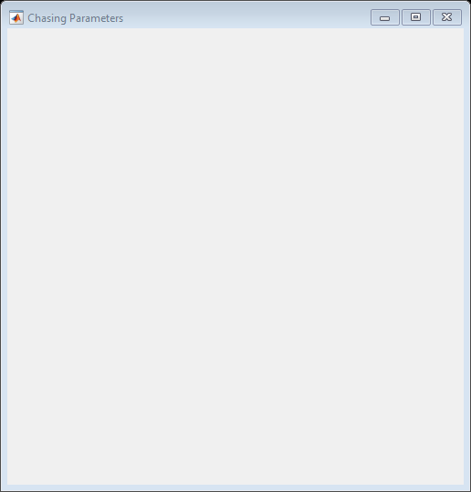
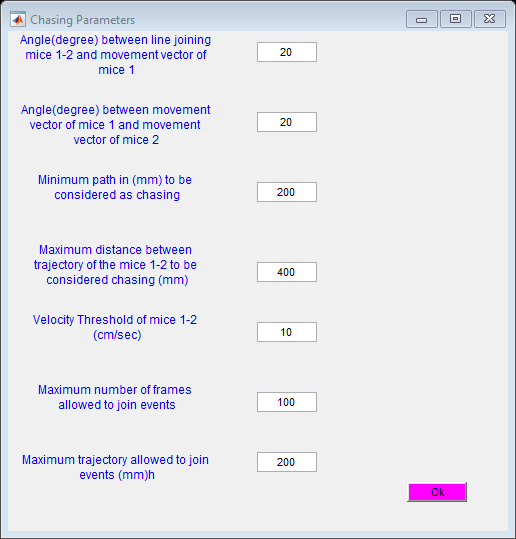

Contents
function [ output_args ] = ChasingParameters( ~,~ )
global h1
global angle1
global angle2
global par1
global par2
global par3
global par4
global par5
Creation of a figure
h1.Layout1= figure('Visible','on','MenuBar','None','NumberTitle','off',...
'Toolbar','none','HandleVisibility','callback',...
'Color',get(0,'defaultuicontrolbackgroundcolor'),...
'name','Chasing Parameters',...
'Position',[320 320 500 500]);

uicontrol(h1.Layout1,'Style','text','String','Angle(degree) between line joining mice 1-2 and movement vector of mice 1','position',[10,450,200,50],'FontSize',9,'ForegroundColor','blue');
h1.editChasingAng1=uicontrol(h1.Layout1,'Style','edit','String','20','position',[250,470,60,20]);
uicontrol(h1.Layout1,'Style','text','String','Angle(degree) between movement vector of mice 1 and movement vector of mice 2','position',[10,380,200,50],'FontSize',9,'ForegroundColor','blue');
h1.editChasingAng2=uicontrol(h1.Layout1,'Style','edit','String','20','position',[250,400,60,20]);
uicontrol(h1.Layout1,'Style','text','String','Minimum path in (mm) to be considered as chasing','position',[10,310,200,50],'FontSize',9,'ForegroundColor','blue');
h1.editpar1=uicontrol(h1.Layout1,'Style','edit','String','200','position',[250,330,60,20]);
uicontrol(h1.Layout1,'Style','text','String','Maximum distance between trajectory of the mice 1-2 to be considered chasing (mm)','position',[10,240,200,50],'FontSize',9,'ForegroundColor','blue');
h1.editpar2=uicontrol(h1.Layout1,'Style','edit','String','400','position',[250,250,60,20]);
uicontrol(h1.Layout1,'Style','text','String','Velocity Threshold of mice 1-2 (cm/sec)','position',[10,170,200,50],'FontSize',9,'ForegroundColor','blue');
h1.editpar3=uicontrol(h1.Layout1,'Style','edit','String','10','position',[250,190,60,20]);
uicontrol(h1.Layout1,'Style','text','String','Maximum number of frames allowed to join events','position',[10,100,200,50],'FontSize',9,'ForegroundColor','blue');
h1.editpar4=uicontrol(h1.Layout1,'Style','edit','String','100','position',[250,120,60,20]);
uicontrol(h1.Layout1,'Style','text','String','Maximum trajectory allowed to join events (mm)h','position',[10,30,200,50],'FontSize',9,'ForegroundColor','blue');
h1.editpar5=uicontrol(h1.Layout1,'Style','edit','String','200','position',[250,60,60,20]);
uicontrol(h1.Layout1,'Style','pushbutton','String','Ok','background','magenta','position',[400,30,60,20],'callback',@RetrieveData);

end
Retrieve Data
function RetrieveData(~,~)
global h1
global angle1
global angle2
global par1
global par2
global par3
global par4
global par5
angle1=str2num(get(h1.editChasingAng1,'string'));
angle2=str2num(get(h1.editChasingAng2,'string'));
par1=str2num(get(h1.editpar1,'string'));
par2=str2num(get(h1.editpar1,'string'));
par3=str2num(get(h1.editpar1,'string'));
par4=str2num(get(h1.editpar1,'string'));
par5=str2num(get(h1.editpar1,'string'));
end